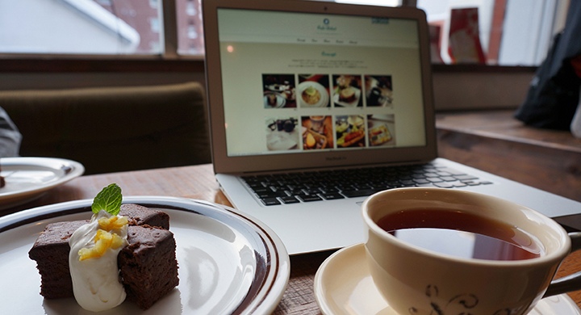

Cafe Debut

baser CMS カフェサイト用テーマ
baser CMS テーマコンテスト2012 飲食店系テーマ賞受賞（受賞結果はこちら）
いますぐ、はじめられるカフェサイトテーマ！
baserCMSは、「コーポレートサイトにちょうどいい」をキャッチコピーにしたcake PHPベースの国産CMS。Cafe Debutは、baseCMSのテーマコンテスト2012に応募するために、チームこもりこましゃで作成しました。
baserCMSのインストールと、Cafe Debutテーマの初期設定を行ったら、あとはあなたのスマートフォンのInstagramで写真を撮っていくだけ。
Instagramのおしゃれ写真で、すぐに素敵なカフェサイトが出来上がっちゃうフォトログ風baserCMSテーマです。
| コモモ | 企画・デザイン・baserCMSテーマのベース組込み担当 |
|---|---|
| モリコ | HTML/CSSコーディング担当 |
| ひろましゃ | プラグイン制作、テーマ実装の難しいところとか担当 |
プラグインでInstagramと連携
プラグインでInstagramと連携して、トップページにInstagramで撮影した写真がすぐに反映されます。
レスポンシブデザインでスマートフォン、タブレット表示も快適
さまざまなデバイスの表示対応に、レスポンシブデザインを採用しました。Instagramでお店のメニューを撮影してすぐにスマートフォンで確認できるのも嬉しい♪
Webフォントだから、飾り文字やアイコンもキレイ
サイトのタイトルやナビゲーション、主要な見出しはGoogle Web Font、アイコンはウェブフォント（Fontello）を採用しています。拡大縮小されるスマートフォンやタブレットでも解像度を気にすることなくキレイな文字とアイコン表示を実現できました。